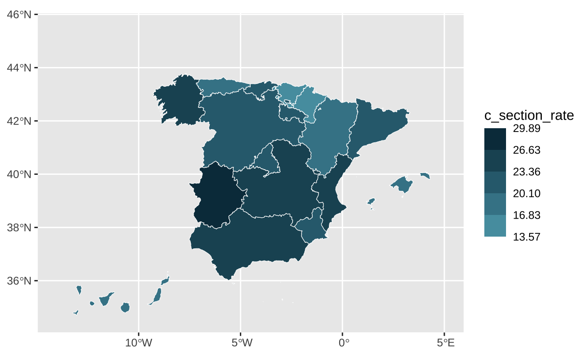
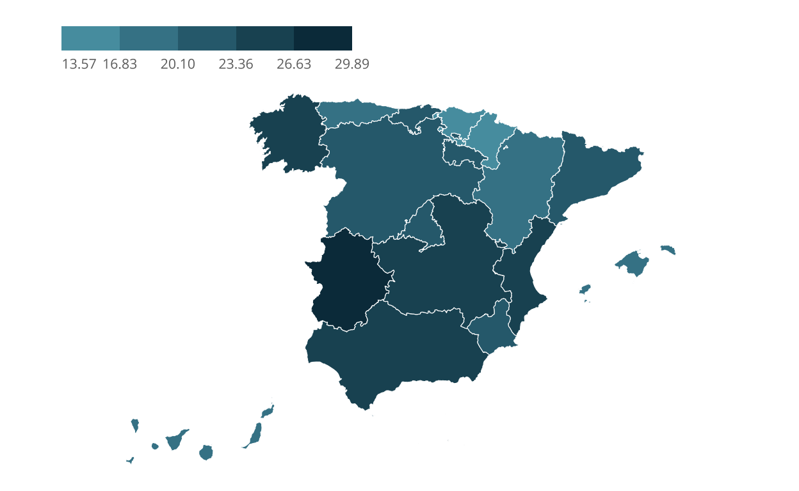
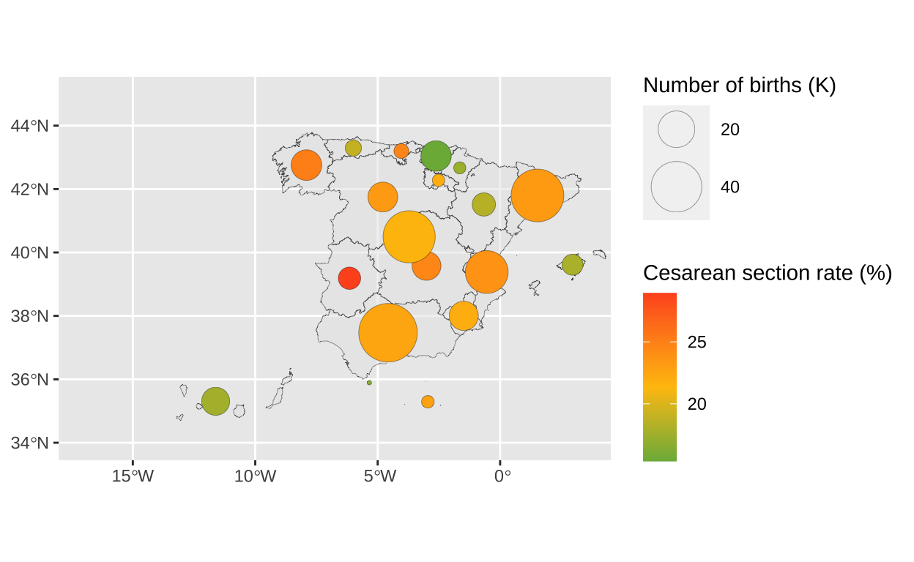
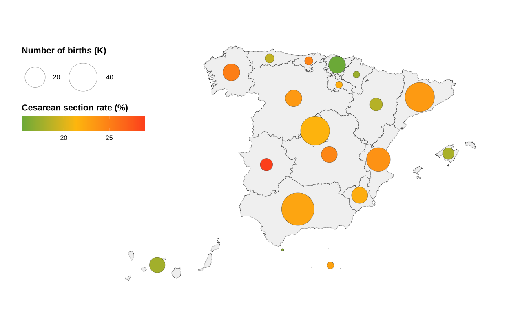
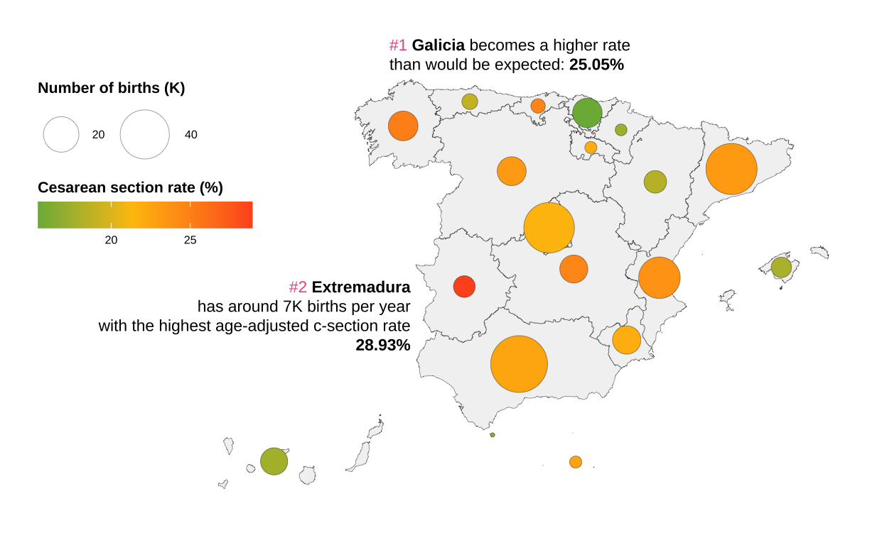

Background
Over the past two decades, the global rate of caesarean sections (C-sections) has experienced a notable increase. While C-sections are a life-saving intervention when medically necessary, inappropriate procedures pose potential risks for both mothers and newborns.
In Spain, caesarean deliveries rank among the most prevalent surgical procedures, accounting for 22% of all deliveries in 2019. The aggressive nature of caesarean sections becomes particularly concerning when performed without medical justification, as such instances may be regarded as obstetric violence and contribute to gender discrimination.
The chart to replicate is found on the Ministry of Health’s website, as part of the indicators from the Minimum Basic Data Set (CMBD). This set comprises a record of all hospital admissions documented over the course of a year (2019 in this case) on a patient-level basis. For each patient, fundamental sociodemographic variables are gathered, and the hospital episode is encoded using international standards for the classification of diseases and procedures.

To reproduce our graph, the original data on cesarean section rate can be downloaded from the same website. The dataset includes information for all autonomous communities regarding the total number of births in Spain, the age of the mother, the total number of births with a cesarean section, and the average age of mothers who underwent a cesarean section.
First steps
The first step is to load the basic libraries and those specific for merging our data, generating maps, etc. Next, we load our original data and perform data cleaning to construct the cesarean section rate variable, which will be essential throughout the development.
# Adjusting locale settings
my_locale <- locale(decimal_mark = ",", grouping_mark = ".")
# Reading data
c_section <- read_delim("tasa_cesareas.csv",
skip = 10,
delim = ";",
col_names = c("ccaa", "n_births", "births_hosp_stay",
"birth_age", "n_c_section", "c_section_age",
"c_section_hosp_stay", "c_section_rate"),
locale = my_locale)
# Cleaning data and generating a new cesarea rate
c_section <- c_section %>%
na.omit() %>%
filter(ccaa != "Total Altas") %>%
mutate(c_section_rate = (n_c_section / n_births) * 100)
ccaa <- c_section %>%
select(ccaa)Now that we have the data loaded and cleaned, we begin constructing our chart. In this case, as it is a map of Spain, we will use the mapSpain library, which allows us to visualize different geographical levels. In this case, we need the data at the level of autonomous communities.
There are several libraries for creating map-based graphics; however, most of them place the Canary Islands in their original location. This can be problematic when representing territories that are geographically distant from the general country area. Fortunately, mapSpain comes with the default fictitious location for the Canary Islands, commonly used in such cases.
# Loading map data
spain <- esp_get_ccaa()
# Ploting the basic map
ggplot(spain) +
geom_sf()# Verifying that the names of the CCAA match to enhance the join.
c_section <- c_section %>%
stringdist_join(
spain,
by = c("ccaa" = "ine.ccaa.name"),
method = "jaccard",
mode = "left",
max_dist = 0.3
) %>%
mutate(
ine.ccaa.name = if_else(ccaa == "Rioja (La)", "Rioja, La", ine.ccaa.name))
# Keeping the main variables
c_section <- c_section %>%
select(ccaa, ine.ccaa.name, n_births, birth_age, c_section_rate, c_section_age)
# Joining map data and cesarean data
c_section <- spain %>%
left_join(
c_section,
by = "ine.ccaa.name"
)
str(c_section)Classes 'sf' and 'data.frame': 19 obs. of 27 variables:
$ codauto : chr "01" "02" "03" "04" ...
$ iso2.ccaa.code : chr "ES-AN" "ES-AR" "ES-AS" "ES-IB" ...
$ nuts1.code : chr "ES6" "ES2" "ES1" "ES5" ...
$ nuts2.code : chr "ES61" "ES24" "ES12" "ES53" ...
$ ine.ccaa.name : chr "Andalucía" "Aragón" "Asturias, Principado de" "Balears, Illes" ...
$ iso2.ccaa.name.es: chr "Andalucía" "Aragón" "Asturias, Principado de" "Islas Baleares" ...
$ iso2.ccaa.name.ca: chr NA NA NA "Illes Balears" ...
$ iso2.ccaa.name.gl: chr NA NA NA NA ...
$ iso2.ccaa.name.eu: chr NA NA NA NA ...
$ nuts2.name : chr "Andalucía" "Aragón" "Principado de Asturias" "Illes Balears" ...
$ cldr.ccaa.name.en: chr "Andalusia" "Aragon" "Asturias" "Balearic Islands" ...
$ cldr.ccaa.name.es: chr "Andalucía" "Aragón" "Principado de Asturias" "Islas Baleares" ...
$ cldr.ccaa.name.ca: chr "Andalusia" "Aragó" "Astúries" "Illes Balears" ...
$ cldr.ccaa.name.ga: chr "Andalucía" "Aragón" "Principado de Asturias" "Illas Baleares - Illes Balears" ...
$ cldr.ccaa.name.eu: chr "Andaluzia" "Aragoi" "Asturiesko Printzerria" "Balear Uharteak" ...
$ ccaa.shortname.en: chr "Andalusia" "Aragon" "Asturias" "Balearic Islands" ...
$ ccaa.shortname.es: chr "Andalucía" "Aragón" "Asturias" "Baleares" ...
$ ccaa.shortname.ca: chr "Andalusia" "Aragó" "Astúries" "Illes Balears" ...
$ ccaa.shortname.ga: chr "Andalucía" "Aragón" "Asturias" "Illas Baleares" ...
$ ccaa.shortname.eu: chr "Andaluzia" "Aragoi" "Asturias" "Balear Uharteak" ...
$ nuts1.name : chr "SUR" "NORESTE" "NOROESTE" "ESTE" ...
$ ccaa : chr "Andalucía" "Aragón" "Asturias (Principado de)" "Balears (Illes)" ...
$ n_births : num 54561 7715 3802 6245 11392 ...
$ birth_age : num 31.4 32.4 33.1 31.7 31.6 ...
$ c_section_rate : num 23.8 18.3 17.4 17.5 17.8 ...
$ c_section_age : num 32.5 33.2 34.1 33.4 33.1 ...
$ geometry :sfc_GEOMETRY of length 19; first list element: List of 6
..$ :List of 1
.. ..$ : num [1:1259, 1:2] -4.27 -4.27 -4.28 -4.28 -4.27 ...
..$ :List of 1
.. ..$ : num [1:6, 1:2] -5.61 -5.61 -5.61 -5.61 -5.61 ...
..$ :List of 1
.. ..$ : num [1:5, 1:2] -3.03 -3.03 -3.04 -3.03 -3.03 ...
..$ :List of 1
.. ..$ : num [1:5, 1:2] -6.31 -6.32 -6.32 -6.32 -6.31 ...
..$ :List of 1
.. ..$ : num [1:6, 1:2] -6.27 -6.27 -6.28 -6.28 -6.27 ...
..$ :List of 1
.. ..$ : num [1:5, 1:2] -6.47 -6.47 -6.47 -6.47 -6.47 ...
..- attr(*, "class")= chr [1:3] "XY" "MULTIPOLYGON" "sfg"
- attr(*, "sf_column")= chr "geometry"
- attr(*, "agr")= Factor w/ 3 levels "constant","aggregate",..: NA NA NA NA NA NA NA NA NA NA ...
..- attr(*, "names")= chr [1:26] "codauto" "iso2.ccaa.code" "nuts1.code" "nuts2.code" ...The next task is to use our cesarean section rate variable to fill the different autonomous communities with varying color intensities according to their values.
Our original map uses various shades of bluish-green to represent the cesarean section rate. The color darkens with a higher cesarean section rate. These color specifications are determined based on specific values. We use the “colors,” “breaks,” and “limits” adjustments in the scale_fill_stepsn function to indicate these specifications.
# Setting the specific colors and breaks
c_section_map <- c_section_map +
scale_fill_stepsn(
colors = c("#5EAABB", "#478B9C", "#2f6b7d", "#184c5d", "#002c3e"),
breaks = c(13.57, 16.83, 20.10, 23.36, 26.63, 29.89),
limits = c(13.57, 29.89)) # Setting the limits
c_section_mapOnce we have the colors set for our chart, we slightly adjust the coordinates for a better framing of the graph.
# Setting the coordinates so we can have space for the legend
c_section_map <- c_section_map +
coord_sf(xlim=c(-14, 5),
ylim=c(34.6, 45.5))
c_section_map
One of the challenges in our chart is the legend. It is placed at the top and in a horizontal position. In addition, the guiding numbers are aligned centrally with the points where the colour changes. This is true for all except the first data point, which is aligned to the left with the beginning of the legend.
# Tunning the fonts
sysfonts::font_add_google("Open Sans", family="Open Sans")
# Tunning the legend
c_section_map <- c_section_map +
theme_void() +
theme(
legend.position = c(0.2,0.9),
legend.direction = "horizontal",
legend.key.width = unit(12, "mm"),
legend.key.height = unit(5, "mm"),
legend.background = element_blank(),
legend.title = element_blank())
# Adjusting alignment of the legend
c_section_map <- c_section_map +
theme(text = element_text(size = 10,
color = "#6d6d6d",
family="Open Sans"),
legend.text.align = c(0, 0.5, 0.5, 0.5, 0.5, 0.5))
c_section_map
Alternative visualisation
One of the factors that may explain for the number of caesarean sections is the age of the pregnant woman.
The Ministry of Health website provides information on the average age of women at delivery in each autonomous community, but it is not used in the visualisation.
Information on the number of births per autonomous community is also provided.
It is necessary to use all the provided information, including the average age of women at delivery and the number of births per autonomous community, to compose a new map depicting the age-adjusted caesarean section rate, while also considering the total number of births. This enhanced visualisation aims to provide insights into the correlation between maternal age and the prevalence of caesarean sections across different autonomous communities.
# Enhancement
# Obtaining the standarised cesarean rate
model <- lm(c_section_rate ~ c_section_age, data = c_section)
coefs <- coef(model)
c_section <- c_section %>%
mutate(c_section_age = c_section_rate - coefs['c_section_age'] * (c_section_age - mean(c_section_age)))
# Lets take a look at the adjusted cesarean rate
summary(c_section$c_section_age) Min. 1st Qu. Median Mean 3rd Qu. Max.
15.38 18.14 21.95 21.38 23.53 28.93 c_section_centroid <- st_centroid(c_section, of_largest_polygon = TRUE)To show the total number of births in a community we will use bubbles that vary in size according to the number of births. We visualise the age-adjusted caesarean section rate using colour.
As this is a continuous variable, instead of using a static colour palette with shades very similar to each other, I will use a colour gradient. We set a gradient where the midpoint of the colour coincides with the average adjusted caesarean section rate.
# Adjusting guides
bubble_map <- bubble_map +
scale_fill_gradient2(
low = "#4CAF50",
mid = "#FFC107",
high = "#FF5722",
midpoint = mean(c_section$c_section_age),
guide = guide_colorbar(
title = "Cesarean section rate (%)",
title.position = "top"
)) +
scale_size(
breaks = c(20000, 40000),
labels = c("20", "40"),
range = c(1, 14),
guide = guide_legend(title="Number of births (K)",
title.position="top",
order=2))
bubble_map
Now we are using two visualisation elements (bubble size and colour), we will have one more legend than in the original chart. We adjust them so that they are placed on the left margin.
# A few more tweaks
bubble_map <- bubble_map +
theme_void() +
theme(
legend.position = c(0.12,0.7),
legend.direction = "horizontal",
legend.key.width = unit(8, "mm"),
legend.key.height = unit(5, "mm"),
legend.background = element_blank(),
legend.title=element_text(face="bold", size=8),
legend.text=element_text(size=6))
bubble_map
Since we are visualising an adjusted rate, it is useful to add annotations to improve the understanding of the graph.
# Including annotations
bubble_map <- bubble_map +
annotate("richtext", x = -8.5, y = 44.3,
label = paste0(
"<span style='color: #e75c93;'>#1 </span><b>Galicia</b> becomes a higher rate<br>
than would be expected:
<b>25.05%</b></span>"),
size = 3,
hjust = 0,
fill = NA,
label.color = NA) +
annotate("richtext", x = -7.5, y = 38.5,
label = paste0(
"<span style='color: #e75c93;'>#2 </span><b>Extremadura</b><br>",
"has around 7K births per year<br>
with the highest age-adjusted c-section rate<br>
<b>28.93%</b></span>"),
size = 3,
hjust = 1,
fill = NA,
label.color = NA)
bubble_map
Finally we add the title and subtitle. Here is the alternative graph showing the number of births in Spain during 2019 and the age-adjusted caesarean section rate, so we can see that the communities in red have high rates and could be having an excess of non-recommendable clinical practices in all cases.
# Adding title and subtitle
bubble_map <- bubble_map +
labs(title = "**Regional disparities in childbirth clinical practice**",
subtitle = "**Number of births** and _age-adjusted caesarean rates_ across autonomous communities") +
theme(plot.title = element_text(hjust = 0.5,
size = 14),
plot.subtitle = element_text(hjust = 0.5,
size = 9)) +
theme(plot.title = element_markdown(),
plot.subtitle = element_markdown())
bubble_map